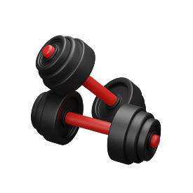
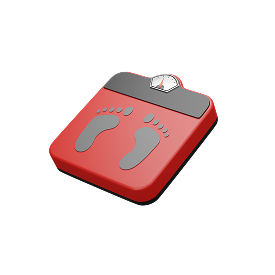

- Abaixo de 18.5
- Entre 18.6 e 24.9
- Entre 25.0 e 29.9
- Entre 30.0 e 34.9
- Entre 35.0 e 39.9
- Acima de 40.0
- Abaixo do peso
- Peso normal
- Pouco acima do peso
- Obesidade grau I
- Obesidade grau II (severa)
- Obesidade grau III (mórbida)

Digite a sua altura(m) *
Digite o seu peso(kg) *
